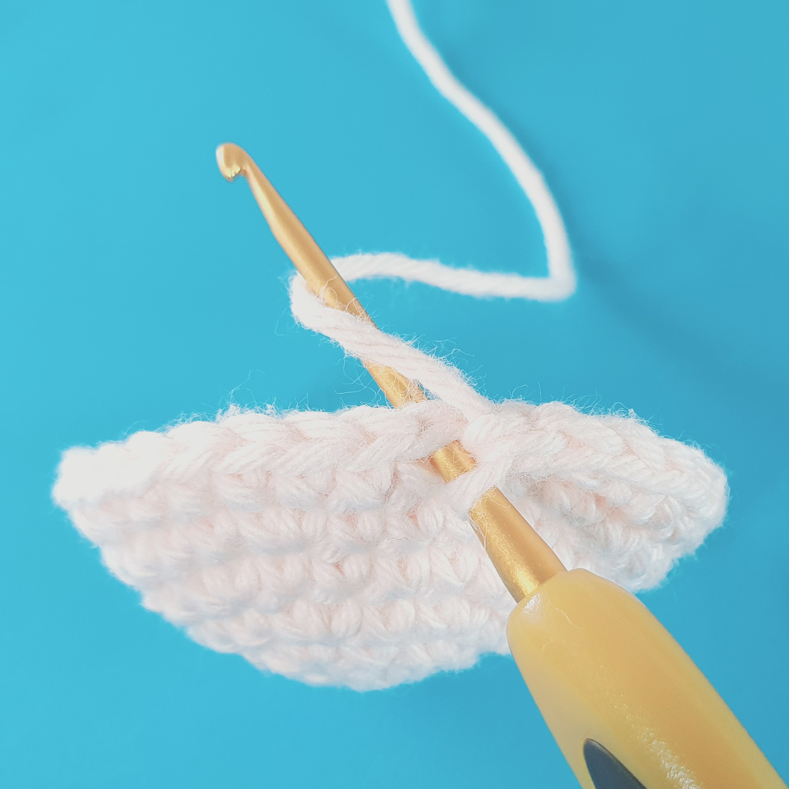
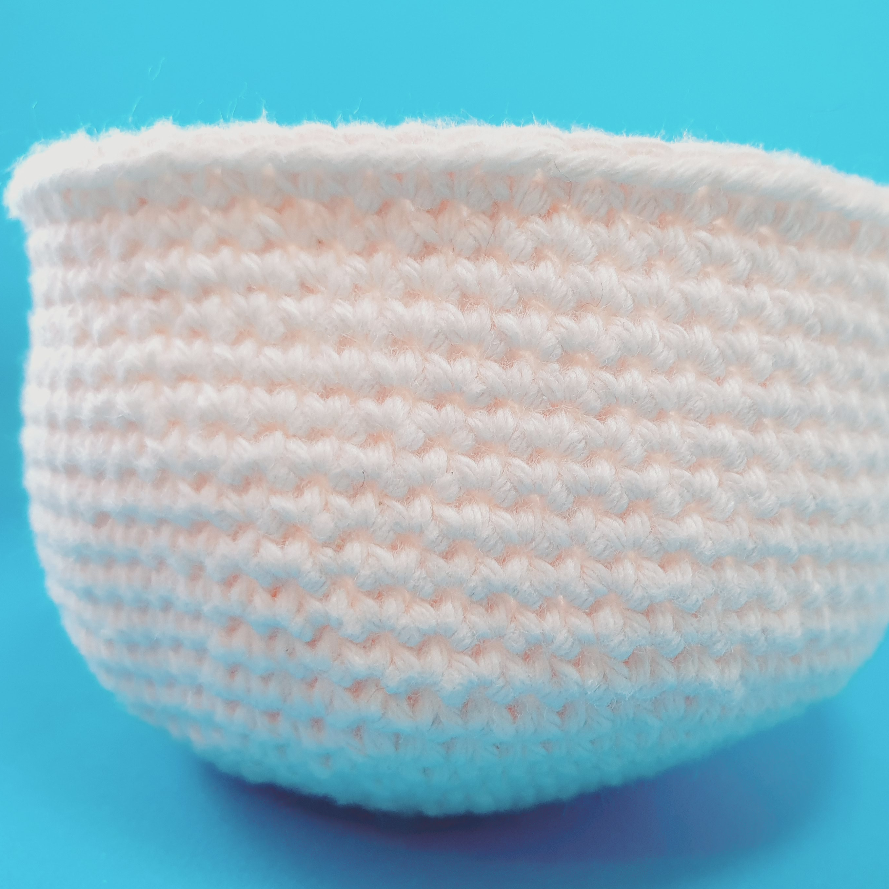
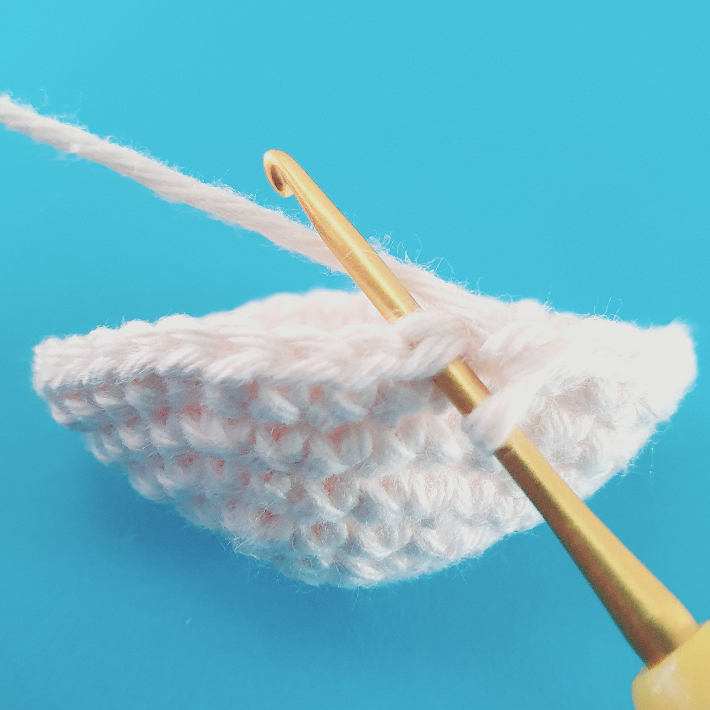

Amigurumi Tips & Tricks
How lucky are you to have ended up here?! After I got the basic stitches down I spent so long being frustrated that my creations weren't coming out with that gorgeous crisp stitch definition I see all over the internet. To save you any more instagram induced stress I've created some photo tutorials of the exact techniques I have discovered that give your amigurumis a nice professional finish. All of the patterns you will find on here by myself use the following techniques throughout.
The Cross Stitch
The cross stitch is a very simple variation of the regular single crochet that results in a boxy even texture with great stitch definition. I personally find it to even out the texture of my pieces and better hides the small lumps made from increasing and decreasing stitches. The fabric also feels a little thicker and more substantial. It is made by simply leaving the hook over the top of the yarn when we make a yarn over.

This is how we yarn over to make a regular single crochet. The yarn passes over the top of the hook and is pulled through the stitch.

This is the texture you get when using a regular single crochet.

For the cross stitch we grab the yarn directly with the hook and pull it through without wrapping it over the top.
This is the fabric made using the cross stitch variation.
The Invisible Decrease
This decrease is much more discreet than a regular decrease which is perfect for keeping shapes like the head smooth and even. It also helps to eliminate small gaps that are sometimes left by a regular decrease.
To make an invisible decrease insert your hook through the front loops of the next two stitches

It should now look like this.

Then yarn over (I do this in the x-stitch fashion with the yarn under the hook) and pull a single loop through both front loops on your hook.

Yarn over and pull through both loops on the hook to complete the stitch like you would for a regular single crochet.